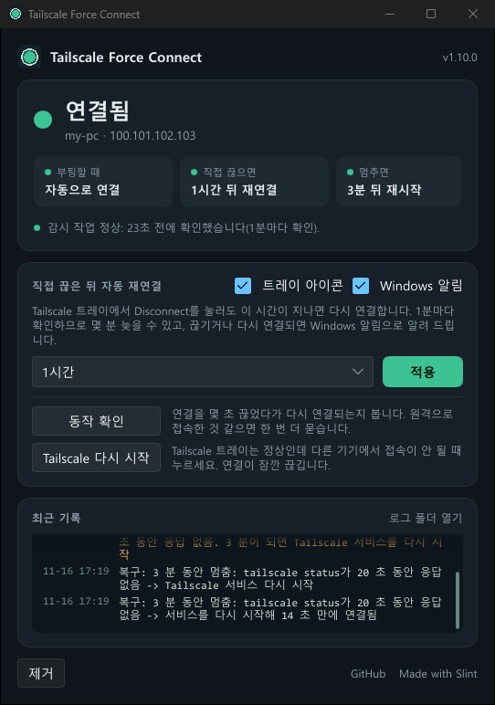

20초부팅 뒤
꺼 둔 채로 재부팅해도
부팅하고 20초 뒤 SYSTEM 권한으로 tailscale up을 실행해 끊어 둔 상태를 덮어씁니다. 네트워크가 늦게 잡히면 10초 간격으로 최대 10분 동안 다시 시도합니다. Windows에 로그인하지 않아도 됩니다.
Windows용 Tailscale 자동 재연결 · 멈춤 복구 · 상태 아이콘
Tailscale은 마지막 상태를 기억해서, Disconnect 한 채로 재부팅하면 끊긴 채로 켜집니다. 원격으로 들어가야 하는 PC라면 그 앞까지 가야 하죠. 이 도구는 부팅할 때마다 SYSTEM 권한으로 다시 연결합니다. Windows에 로그인하지 않아도 됩니다.
powershell -c "irm https://jeiel85.github.io/tailscale-force-connect/get.ps1 | iex"UAC 창이 한 번 뜹니다. 받은 파일은 GitHub에 기록된 SHA-256과 비교한 뒤 설치합니다. get.ps1 보기
실제 기록 문구를 흉내 낸 시뮬레이션 · 시간은 줄여서
하는 일
SYSTEM 예약 작업 두 개가 연결을 지키고, 작업 표시줄 아이콘이 그 작업이 정말 돌고 있는지 보여 줍니다. 기존 tailscale up 설정(exit node, 경로 수락 등)은 건드리지 않습니다.
부팅하고 20초 뒤 SYSTEM 권한으로 tailscale up을 실행해 끊어 둔 상태를 덮어씁니다. 네트워크가 늦게 잡히면 10초 간격으로 최대 10분 동안 다시 시도합니다. Windows에 로그인하지 않아도 됩니다.
끊는 건 자유입니다. Tailscale 트레이에서 끊었든 tailscale down으로 끊었든, 끊긴 상태가 1시간 넘게 이어지면 다시 연결합니다. 30분·2시간·4시간으로 바꾸거나 끌 수 있고, 끊기고 돌아올 때 Windows 알림으로 알려 줍니다.
절전에서 깨어난 뒤 Tailscale 트레이는 '연결됨'인데 다른 기기에서는 offline인 상태가 실제로 있습니다. 인터넷이 되는데도 3분 넘게 이어지면 Tailscale 서비스를 다시 시작합니다. 인터넷이 끊긴 거라면 건드리지 않습니다.
같은 감시 작업 · 30분에 한 번까지작업 표시줄의 상태 아이콘이 연결 상태와 함께, 위의 감시 작업이 정말 돌고 있는지를 색으로 보여 줍니다. 조용히 멈춰 있으면 빨강으로 바뀝니다.
트레이 아이콘 · 사용자마다 끌 수 있음트레이 아이콘 · v1.10
"트레이 아이콘이 없으니 잘 되고 있는지 모르겠다"에서 시작한 기능입니다.
watch-last.json에 시각을 덮어쓰고, 트레이가 그 시각을 봅니다.연결됨 · my-pc · 100.101.102.103
감시 정상 · 20초 전 확인
끊김 · 약 40분 뒤 다시 연결
감시 작업이 12분 동안 돌지 않음
확인하는 중…

관리 창
트레이 아이콘이나 시작 메뉴의 Tailscale Force Connect로 엽니다. 여는 것만으로는 관리자 권한이 필요 없고, 설정을 바꾸는 버튼을 누를 때만 UAC 창이 뜹니다.
설치
Windows 10/11, Tailscale에 로그인된 상태, 관리자 권한이 필요합니다. 어느 방법이든 UAC 창이 한 번 뜹니다.
cmd나 PowerShell에 붙여 넣으면 최신 릴리스를 받아 설치하고 관리 창을 엽니다.
powershell -c "irm https://jeiel85.github.io/tailscale-force-connect/get.ps1 | iex"인터넷에서 받은 스크립트를 바로 실행하는 방식입니다. 먼저 읽어 보려면 get.ps1을 열어 보세요.
git clone https://github.com/jeiel85/tailscale-force-connect.git
cd tailscale-force-connect
powershell -ExecutionPolicy Bypass -File .\install.ps1set TFC_NOTEST=1 &&, PowerShell은 $env:TFC_NOTEST=1;를 붙이고, zip은 install.cmd -NoTest로 실행합니다.공식 기능과 비교
Tailscale 1.84 이상은 비슷한 시스템 정책을 제공합니다. 관리하는 기기가 많거나 MDM·GPO를 쓴다면 공식 정책이 더 맞습니다.
| 방법 | 직접 끊기 | 다시 연결되는 때 |
|---|---|---|
AlwaysOn. | 불가 | 끊을 수 없게 막습니다. OverrideWithReason을 켜면 사유를 적고 끊을 수 있습니다. |
Reconnect | 가능 | 정한 시간(예: 30m)이 지나면 다시 연결합니다. 다만 1.104.5에서 tailscale down 뒤에는 재연결되지 않았습니다. |
| 이 도구 | 가능 | 직접 끊으면 약 1시간(바꿀 수 있음) 뒤 다시 연결하고, 부팅할 때는 기다리지 않고 바로 다시 연결합니다. 연결된 척 멈춘 상태도 되살립니다. |
공식 문서에는 정책이 재부팅 때 어떻게 동작하는지 따로 적혀 있지 않습니다. Tailscale 시스템 정책 문서
설치되는 것
모두 한 줄로 제거할 수 있습니다. SYSTEM이 실행하는 스크립트는 관리자만 고칠 수 있는 폴더에 둡니다.
Tailscale Auto Connect: 부팅하고 20초 뒤 SYSTEM으로 실행합니다. 연결될 때까지 10초 간격으로 최대 10분 동안 tailscale up을 시도합니다.Tailscale Auto Reconnect: SYSTEM으로 1분마다(멈춤 감시를 끄고 재연결 시간을 10분 이상으로 두면 5분마다) 확인합니다. 시간은 install.cmd -ReconnectAfter 30m, -HealAfter 10m로 바꾸고, 0이면 끕니다.Tailscale Force Connect Status Alert: 로그인한 사용자 권한으로 1분마다 끊김·재연결·복구를 Windows 알림으로 알리고, 트레이 아이콘이 꺼져 있으면 다시 띄웁니다. 새 버전 확인 작업도 함께 등록합니다.C:\Program Files\Tailscale Force Connect\에 관리 창과 스크립트 원본을 두고 시작 메뉴 바로가기를 만듭니다. 이 폴더는 관리자만 쓸 수 있습니다.C:\ProgramData\TailscaleAutoConnect\: 관리자만 고칠 수 있고 일반 사용자는 읽기만 합니다. connect.log와 이벤트 뷰어(원본 TailscaleForceConnect)에 결과가 남습니다.tailscale up만 실행하므로 다른 설정은 바뀌지 않습니다.제거
예약 작업, 설치 폴더, 관리 창과 트레이 아이콘, 이벤트 로그 원본, 사용자별 알림 기록을 지웁니다. 그 밖의 Tailscale 설정은 그대로 남습니다.
어느 방법으로 설치했든 cmd나 PowerShell에 붙여 넣으면 됩니다. UAC 창이 한 번 뜹니다.
powershell -c "irm https://jeiel85.github.io/tailscale-force-connect/remove.ps1 | iex"설치할 때 복사해 둔 제거 스크립트를 실행합니다. remove.ps1 보기
관리 창의 [제거]를 두 번 누르거나, zip이나 git으로 받은 폴더에서 uninstall.cmd를 더블클릭합니다.